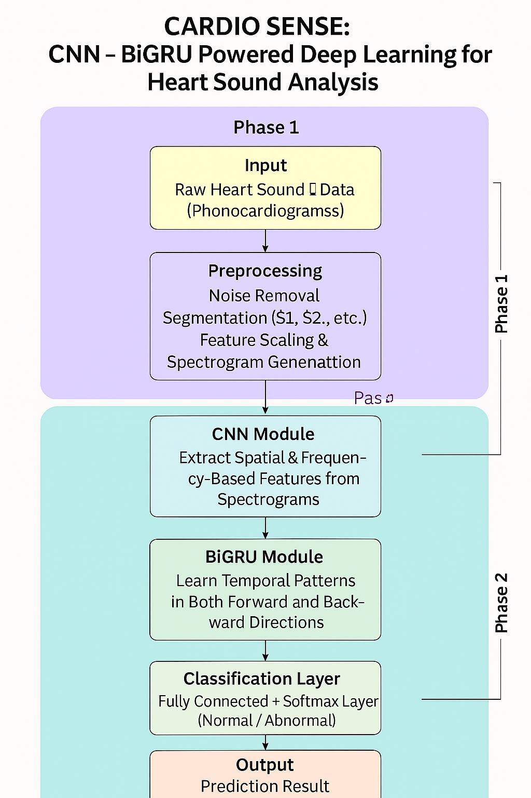
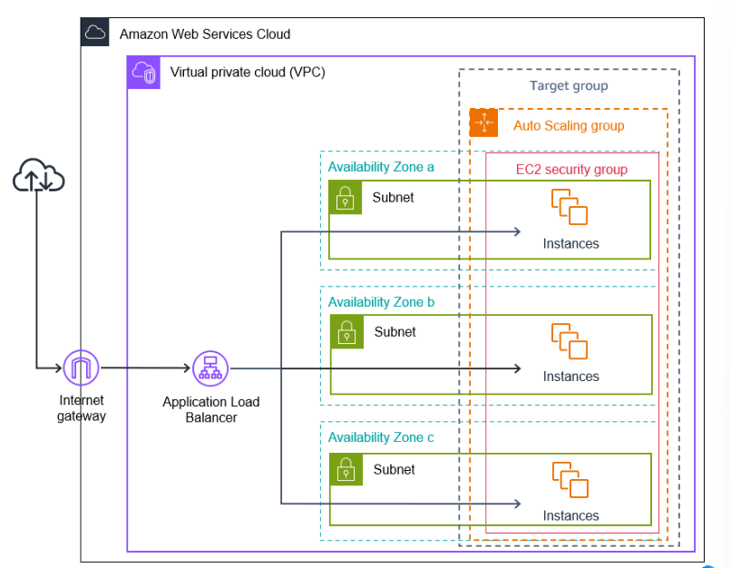

I’m a B.Tech Computer Science graduate with a strong interest in DevOps, cloud computing, software development, and automation. I enjoy solving real-world problems using technology and have a passion for learning new tools, building scalable systems, and writing clean, efficient code.
I’m currently exploring opportunities where I can grow as a DevOps Engineer, Software Developer, or Cloud Engineer, and contribute meaningfully to team goals. I'm comfortable working with Python, SQL, and AWS, and I love automating workflows and deploying applications..
Feel free to connect with me on GitHub or LinkedIn to see my projects and contributions.
I’m always open to discussing new projects, ideas, or opportunities. Whether you want to collaborate on a project, share insights, or just have a chat about technology, feel free to reach out!
You can reach me via email at saranya.work.dev@email.com
Built a deep learning system using CNN and BiGRU to analyze heart sound (PCG) signals for early detection of cardiovascular issues. The system processes heartbeats from stethoscope recordings, transforms them into spectrograms, and classifies patterns of murmurs or arrhythmias.
Applied signal preprocessing techniques (bandpass filters, FFT), and trained the model using publicly available datasets. Implemented the full model pipeline using Python with TensorFlow and Keras, and visualized training performance with Matplotlib.
Target use case includes mobile health applications and wearable diagnostic tools for accessible heart monitoring.
Tools & Technologies: Python, CNN, BiGRU, Visual Studio Code, Google Colab
Developed a highly available and scalable infrastructure on AWS to host a web application. Configured an Application Load Balancer (ALB) to route traffic across EC2 instances within Auto Scaling Groups. The architecture ensured performance, reliability, and minimal downtime.
Integrated IAM for role-based access control and used VPC to secure resources. Leveraged S3 for storing static files and implemented AWS CloudWatch to monitor performance and trigger alerts.
Automated deployment through a CI/CD pipeline using GitHub and AWS CodePipeline. Provisioned the entire infrastructure with AWS CloudFormation templates for consistent, repeatable environments.
Tools & Technologies: AWS EC2, ALB, Auto Scaling, VPC, IAM, S3, CloudWatch, GitHub
CGPA: 83.1(upto 7 sem)
Percentage: 83.5
Percentage: 76.5
Learned SDLC process, software testing fundamentals, and test case creation techniques through hands-on training.
Covered fundamentals of Python programming and basic problem-solving approaches for beginners.